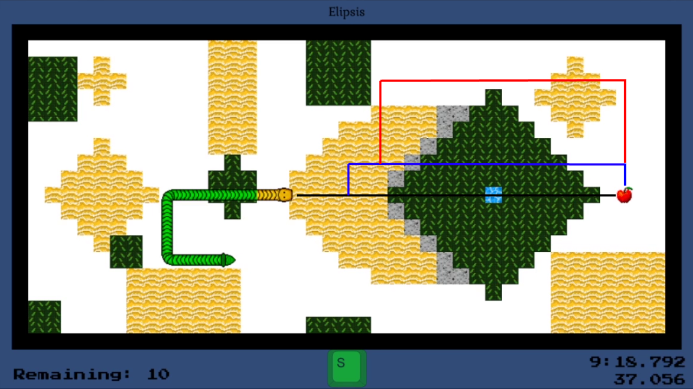

PhaseWorm
PhaseWormPhaseWorm
Welcome to the official site for PhaseWorm, a fast-paced 2D timing and reflex game built to push players to speedrun levels and hone their skills. The game features a medal system which rewards advanced play and difficult routes through each of the game’s 30 thematic stages.
PhaseWorm hits steam on May 4th in early access! The core gameplay is done and it’s time to put it in the hands of more players and work with the community to continuously improve the game’s look and feel. In the meantime there is lots of fun to be had! The first dev playthrough from start to finish took over 90 minutes and had 154 deaths - so if you think you can beat that, give it a download and try your hand at PhaseWorm!
The big idea behind PhaseWorm can be explained by taking a look at the level design. The most direct route to the apple is the hardest. Further diversions from the optimum path are slower, but easier to execute. Navigating the black line requires three tile-perfect phases (green, blue, green). The blue path requires only one phase (green) and affords an uncolored space to do so. The red path can be done without any phasing, but requires going the long way around.

What kind of PhaseWorm will you be? Will you go for the gold or even platinum medals on each stage?
Check out the early access trailer to see more!